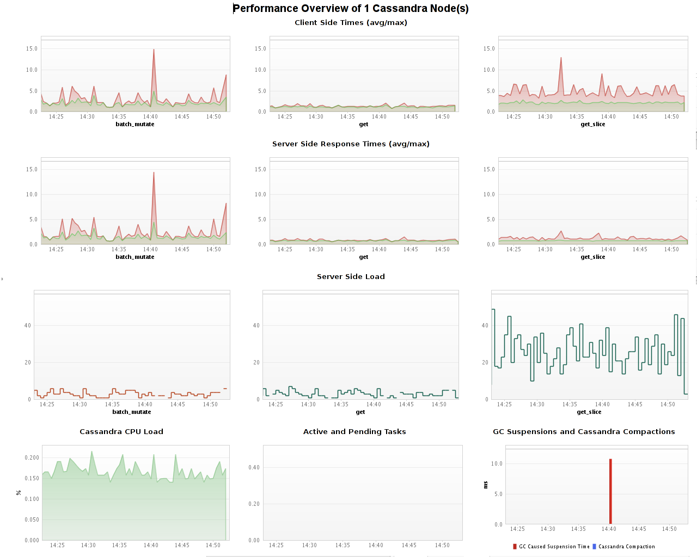

Apache Cassandra Fastpack
Table of Contents (Start)
Apache Cassandra Fastpack
Overview

The dynaTrace FastPack for the Apache Cassandra NoSQL Database enables easy out-of-the-box monitoring. The FastPack consists predefined JMX Measures for Cassandra, Sensors for Cassandra Server and Cassandra Clients, Business Transactions a Template Profile and Dashboards.
Fast Pack Details
|
Name |
Apache Cassandra Monitoring FastPack |
|
Version |
1.0.0 |
|
dynaTrace Version |
4 |
|
Author |
Michael Kopp |
|
License |
|
|
Support |
|
|
FastPack Contents |
Fastpack Download contains:
|
Cassandra Performance Overview

The Cassandra Load Dashboard gives an Overview of Client and Server Side performance and Load.
-
Client Side Times (avg/max)
This first row shows the Cassandra response time from the applications point of view. It automatically splits into its separate operation types and shows average and max for each. this can be used to see if there is a big difference between server and client performance and if the response time is volatile -
Server Side Load
This shows the number of requests per operation types that are executed on the Cassandra servers -
Server Side Response Times (avg/max)
Shows the Cassandra server side response time per operation type. It shows average and max to give a feeling of volatility -
Cassandra CPU Load
This show the average CPU load over all Cassandra instances -
Active and Pending Tasks
Cassandra executes several tasks per request and other background tasks. Under normal circumstances there should be no backlog. Once an instance starts to get overloaded in some area the active and subsequently the pending tasks will be rising. If this shows a continuous growing trend you need to investigate further. If it is stable but none zero there is room to optimize -
GC Suspensions and Cassandra Compactions
Cassandra is sensitive to Garbage Collection. Frequent GC suspensions indicate too much load and or non optimal configuration of the memtables.
Cassandra also needs to do Compaction on its data. If this happens too often or takes too long the it is either overloaded or the memtables are not configured correctly for one of the column families.
Business Transactions
-
Cassandra Compaction
There are two versions of this Business Transaction, one for the current 1.0.x release and one for the last stable release (0.8.x). The newer one shows compaction per keyspace and column family. The older one shows compaction per column family and SSTable. -
Cassandra Action
Shows Cassandra Server Side Operations. Those include the typical get, get_slice, batch_mutate and others -
Cassandra Client
Shows Cassandra Client Side Operations. Those include the typical get, get_slice, batch_mutate and others
FastPack Information
The Fastpack contains a Dashboard and a Template System Profile. In addition it contains a Metric Group for Cassandra JMX Measures, some of which are already subscribed in the system profile.
dynaTrace can monitor any JMX attribute available withing Cassandra in addition to those supplied in this fastpack.
The System Profile already contains an Agent Group for Cassandra, just add the dynaTrace agent to your JVM_OPTS when starting Cassandra (use name=Cassandra). This agent group contains some minor modifications to allow optimal monitoring of Cassandra.
The System profile also contains all necessary Sensors to monitor both Server and client side. Add the Cassandra Common Sensor group in your own agent groups.
Installation
Just download and import the FastPack on your dynaTrace Server (see Plugin Management)
If you start with a fresh system simply copy the provided System profile (to give it an application specific name) and add agent groups for your own application. If you want to use Cassandra in an existing System profile please copy the following items to your system profile.
-
Cassandra Business Transactions (you only need to copy those that apply to your Cassandra version)
-
Both sensor groups
-
the Cassandra Agent Group cannot be copied please do the following
-
Create a separate agent group for Cassandra
-
apply both Cassandra sensor groups
-
disable the Executor Tagging sensor
-